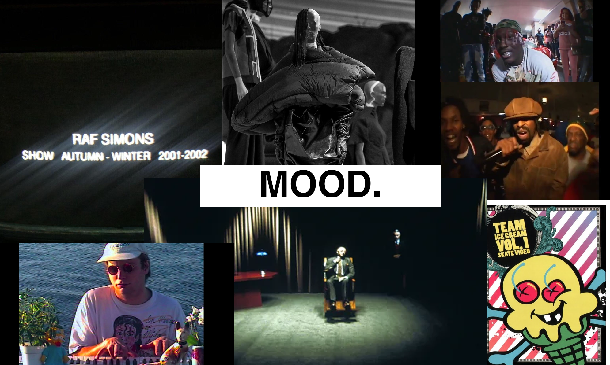
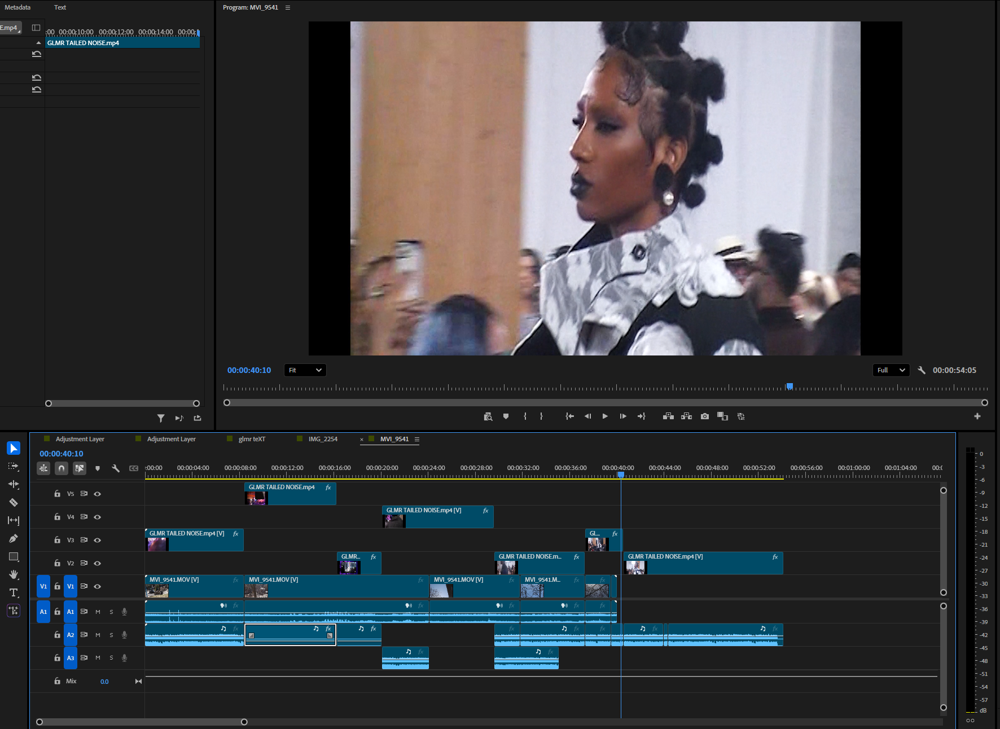
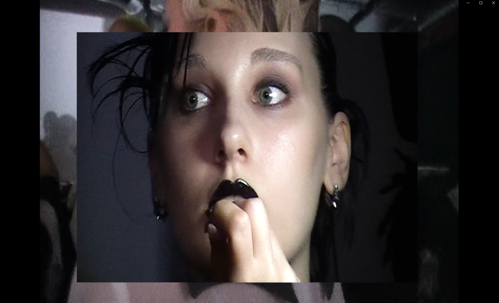
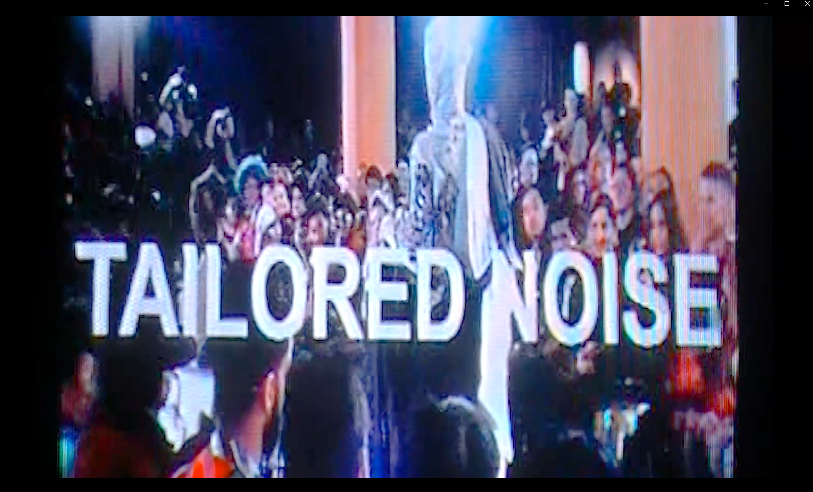
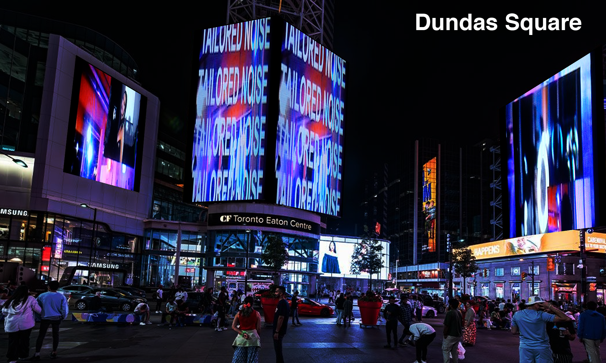

FINAL CUT

MOOD BOARD

EDITING PROCCESS

PRE-COLOR GRADING

POST PROCESSING AND COLOR GRADING

APPLICATION ON BILLBOARD SCREENS
GLMR FOR TAILORED NOISE
PROJECT DETAILS
This video is part of a larger series that is currently in the works called GVXY, a series intended to artistically recreate and capture the vibe and aesthetics of 90s video culture. Here, I take the time to showcase and capture some of the most exciting moments of the up and coming designer brand Tailored Noise, featured at the famous Fashion Art Toronto event (FAT for short).
Problems & Solutions: Though a pretty smooth process in creation, some creative challenges during the creation of this project was to figure out the type of shots to capture without knowledge of the venue layout and reducing an hour worth of footage into a minute. I overcame this hurdle by coming to the venue early and walking pretending to look for the washroom, I got a chance to see where the models were going to walk out and I instantly knew how I wanted to shoot. I chose to be as run and gun as possible because of the beauty and emotion that come from the imaging of imperfection (a key feature of my style).
ROLES: Creative Director, Videographer, Editor.
CREDITS: Christopher San Juan